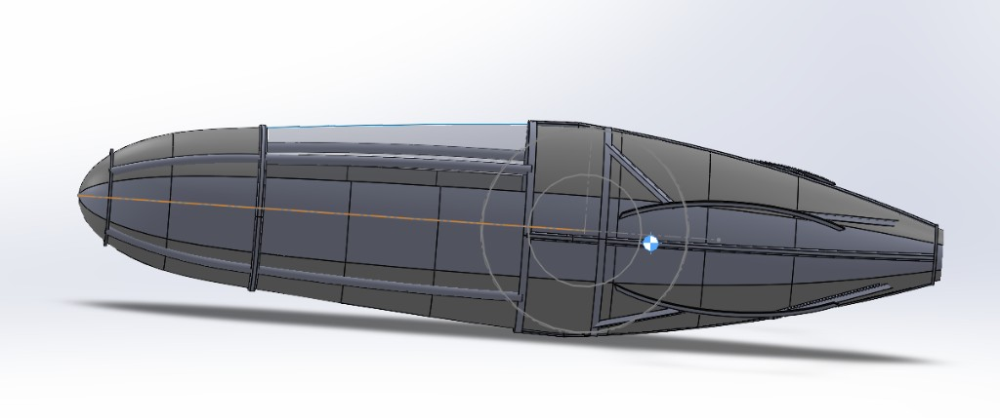
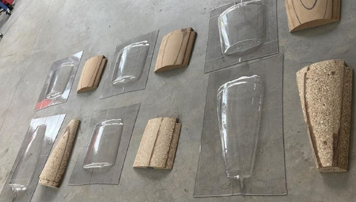
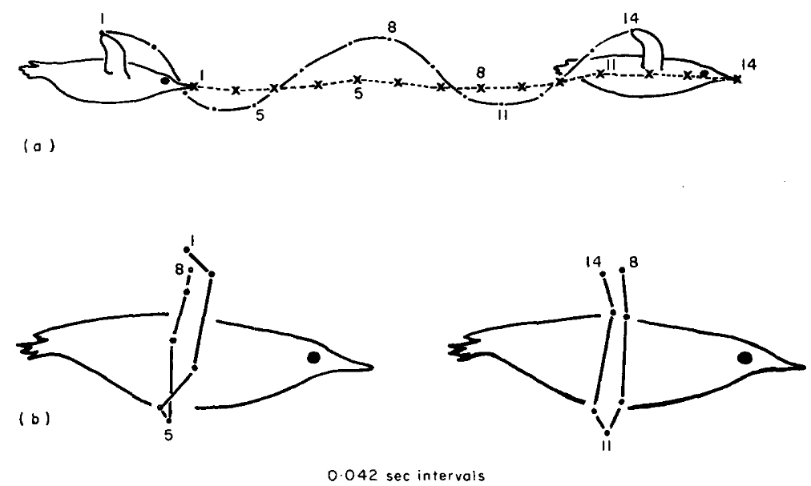
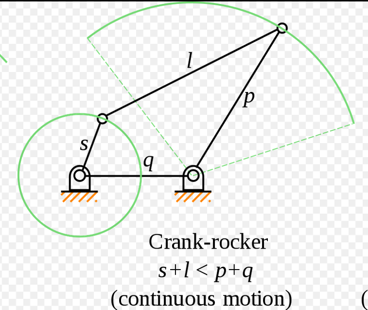
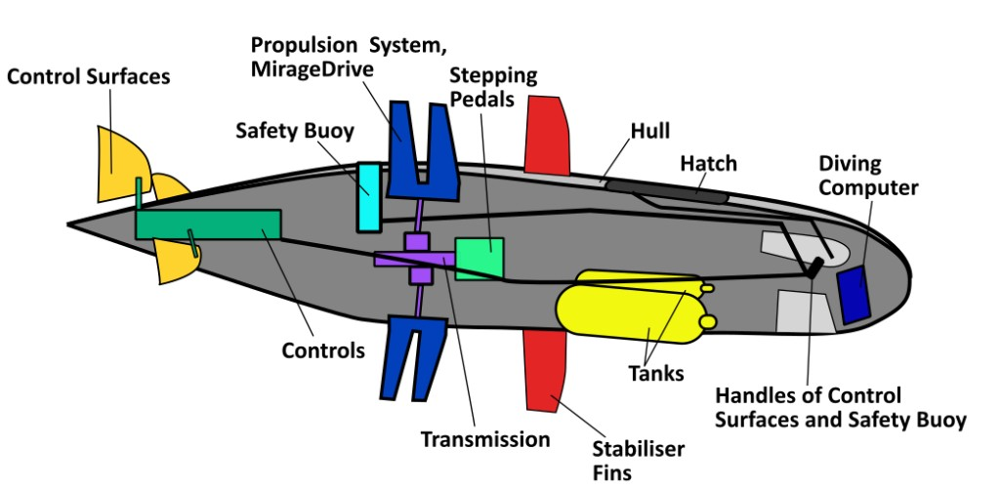
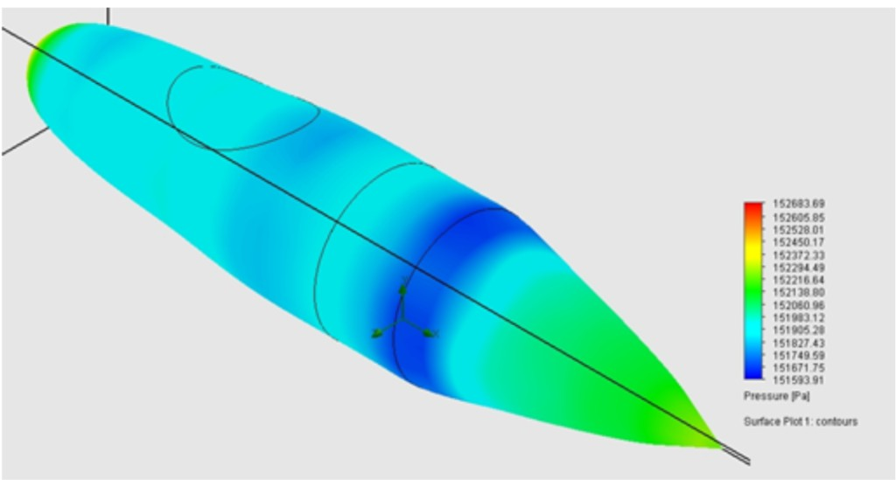
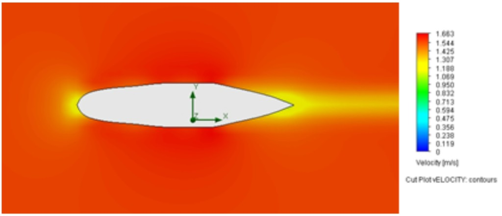
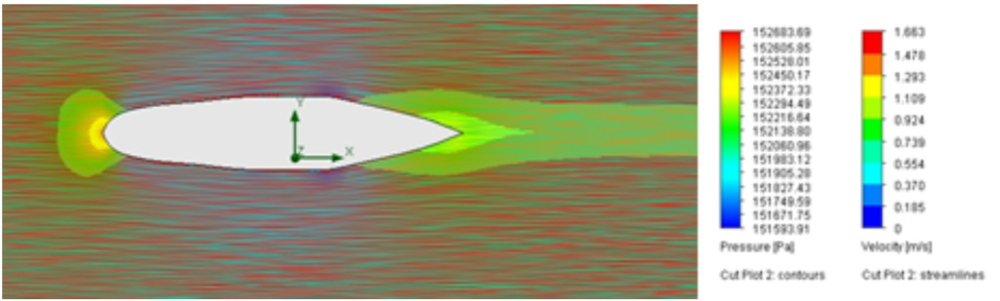

European International Submarine Races 2022 · HSRW Submarine Team
Cygnus IV is a single-seat human-powered submarine designed for the 2022 European International Submarine Races (eISR). Built by the Rhine-Waal University (HSRW) submarine team, it combines a transparent PET-G hull, aluminium wireframe, biomimetic MirageDrive propulsion, and a crank-rocker transmission — with sustainability and innovation as core design aims.
Because of limited time, the proven Rivershark Mod II was upgraded to Rivershark Mod III for pilot training and as a race backup. Rivershark first competed in 2013 and won best biomimetic and best female pilot awards at eISR 2018.
The hull is made from recyclable transparent PET-G panels, each vacuum-formed over CNC-machined moulds and bolted together for modularity. A lightweight aluminium wireframe reinforces the hull against impact and supports internal components. The design targets a fineness ratio of 0.22 (70 cm height, 315 cm length) to balance skin friction and pressure drag.


Instead of a conventional propeller, Cygnus uses four pairs of Hobie MirageDrive fins that simulate penguin "aquatic flight" — thrust generated by lift on oscillating hydrofoils rather than drag. Compared to Rivershark's two fin pairs and 196° oscillation, Cygnus targets ~310° rotation with fins phased 90° apart so thrust is continuous while one pair turns over.

Pedal rotation is converted to oscillatory fin motion through a crank-rocker four-bar linkage, selected over half-bevel gears, rack-and-pinion, and coaxial cylinder mechanisms for reliability and ease of manufacturing. Bicycle pedals drive a chain to a central shaft; crank-rockers in each outrigger produce ~315° of fin oscillation via sprockets and cable pulleys.

Cross-plane rudders and NACA 0021 elevators provide yaw and pitch control, actuated by linear actuators with Arduino-based electronics. A dead-man-switch releases a safety buoy at the stern for emergency recovery. Twin-keel outriggers provide buoyancy, stability, and internal routing for transmission shafts.

CFD analysis was used to evaluate hull hydrodynamics and identify areas of high pressure drag and wake formation, guiding iterative refinement of the nose and tail profiles.



While Cygnus IV was under development, Rivershark was upgraded for training and as a competition backup:
Project supervised by Prof. William Megill. Supported by FabLab.blue Kleve, FabLab Kamp-Lintfort, and sponsors TÜV Nord AG, Industriepark Kleve, and Förderverein HSRW Campus Kleve.